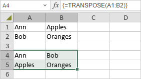

TRANSPOSE Funkcija
TRANSPOSE funkcija je jedna od lookup i reference funkcija. Koristi se da konvertuje kolone u redove i redove u kolone.
Sintaksa
TRANSPOSE(array)
TRANSPOSE funkcija ima sledeće argumente:
| Argument | Opis |
|---|---|
| array | Referenca na opseg ćelija. |
Napomene
Napomena: ovo je array formula. Za više informacija pročitajte članak Insert array formulas.
Kako primeniti TRANSPOSE funkciju.
Primeri
Slika ispod prikazuje rezultat koji vraća TRANSPOSE funkcija.
